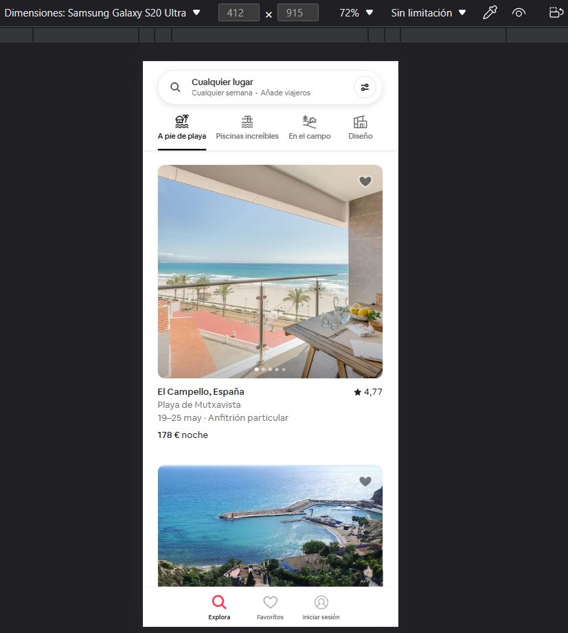

Visual Hierarchy
Organization: Airbnb
Website: https://www.airbnb.com/
Airbnb uses visual hierarchy to guide the user's eye from the logo and search bar at the top, to the popular destinations and experiences below, to the call to action and footer at the bottom. The use of contrast, size, color, and spacing helps to create a clear and intuitive layout.
Hick's Law
Organization: Netflix
Website: https://www.netflix.com/
Netflix applies Hick's law by limiting the choices on its home page to three: sign in, join now, or watch free for 30 days. The user can easily decide what action to take without being overwhelmed by too many options or information.
Fitt's Law
Organization: Spotify
Website: https://www.spotify.com/
Spotify follows Fitt's law by making its navigation menu large and accessible at the bottom of the screen. The user can easily switch between different sections of the app without having to stretch their finger or move their cursor too far.